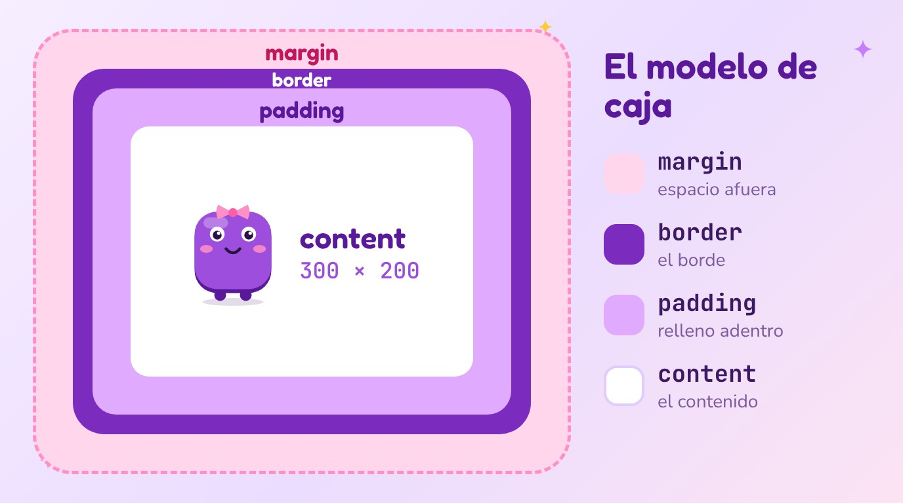
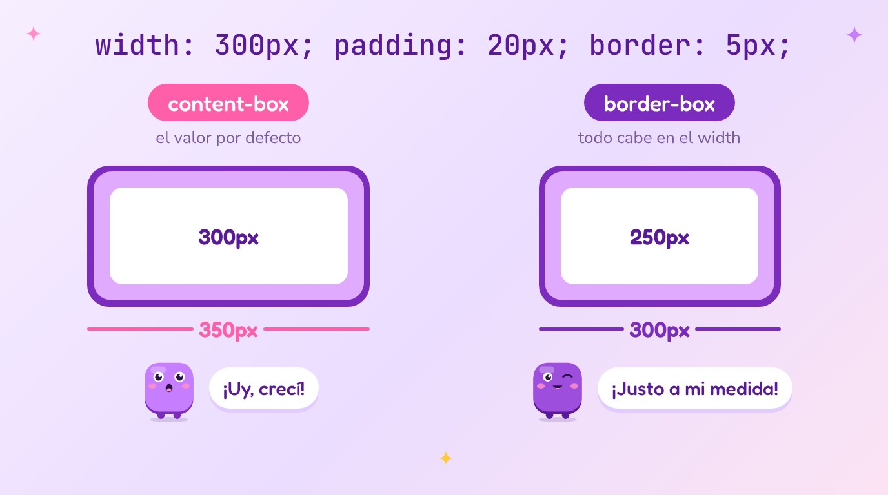

CSS BOX MODEL GUIDE
Estructura y dimensiones de los elementos web
¿Qué es el Box Model (Modelo de Caja)?
En CSS, todo elemento en una página web se representa como una caja rectangular. El Modelo de Caja describe cómo interactúan entre sí los componentes de diseño: el contenido, el relleno (padding), el borde (border) y el margen (margin).
Núcleo de la caja
Contiene el texto, imágenes u otros elementos multimedia.
width: 300px; height: 150px;
Espacio interior
Es el espacio libre situado entre el contenido real y el borde del elemento.
padding: 20px 10px;
Línea de contorno
Envuelve al contenido y al padding definiendo grosor, estilo y color.
border: 2px solid black;
Espacio exterior
Separa la caja de otros elementos que se encuentren a su alrededor.
margin: 0 auto;
Cálculo de tamaño
Define si padding y border se suman al ancho total.
box-sizing: border-box;
Línea exterior
Línea que se dibuja alrededor de los elementos por fuera del borde.
outline: 1px dashed red;
Control por Lados Específicos
No siempre es necesario aplicar los mismos valores en los cuatro lados. Puedes modificar individualmente la parte superior, derecha, inferior o izquierda utilizando sufijos específicos como -top, -right, -bottom o -left.
padding-left: 25px; margin-top: 10px;
Centrado Horizontal Automático
Para centrar una caja horizontalmente en la pantalla, es indispensable asignarle un ancho fijo (width) y posteriormente configurar sus márgenes laterales automáticos (auto) en la propiedad margin.
width: 500px; margin: 0 auto;
Esquema Visual de Márgenes y Rellenos
Visualización de cómo el navegador interpreta el espacio exterior e interior de una etiqueta HTML.

Comparativa con Border-Box
Ejemplo gráfico del comportamiento de las dimensiones al aplicar la propiedad box-sizing.
